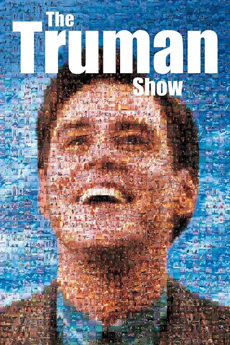

Entra no mundo de Truman
Lançado em 1998 e realizado por Peter Weir, The Truman Show acompanha Truman Burbank, um homem que vive numa cidade aparentemente tranquila, sem imaginar que a sua vida está a ser transmitida para milhões de espectadores.
À medida que pequenos acontecimentos começam a parecer estranhos, Truman questiona tudo aquilo que sempre considerou verdadeiro e tenta descobrir o que existe para lá dos limites do seu mundo.
Três razões para conhecer este filme
- Uma ideia original que mistura comédia, drama e ficção científica.
- Uma reflexão sobre a privacidade, os meios de comunicação e a liberdade.
- A interpretação marcante de Jim Carrey num papel diferente do habitual.
Uma pergunta para o espectador
Até que ponto conhecemos realmente o mundo em que vivemos?
Descobre mais

Consulta a ficha do filme no IMDb — The Truman Show .